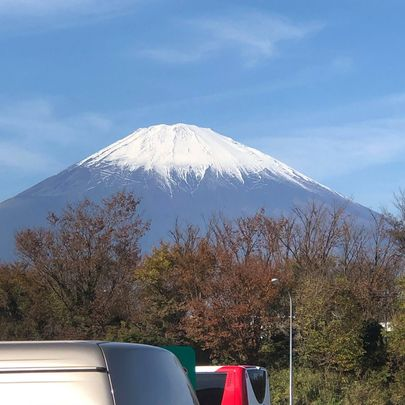
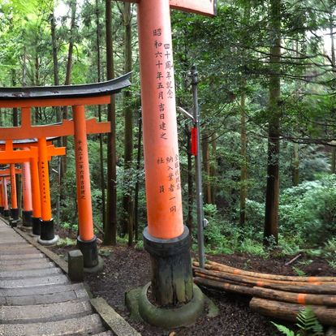
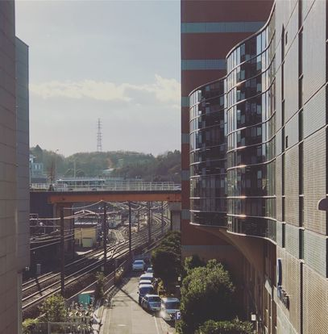

Here on this gallery page, as a refresher from all the translation notes, I have collected a grouping of photos from my
time living in Japan from summer 2018 to summer 2020.
A side street in the Asakusa district of Tokyo

Mt. Fuji as seen from a rest-stop on the highway in Shizuoka Prefecture

A couple of the thousands of Torii gates at Fushimi Inari in Kyoto

A view from the platform of Minami-Osawa station in HachiojiOsaka Castle in spring with cherry blossoms in full bloomA park of sakura blossoms in full bloom near my bus stop in HachiojiA bird's eye view from Tokyo Tower, the tallest structure in JapanMe in front of the Kegon waterfall in the mountain town of Nikko